1 タイトル画面
アプリを起動すると表示されるタイトル画面です。
- 左上の本アイコンをタップすると、ガイドブックを読むことができます。
- 右上の歯車アイコンをタップすると、DartHackの設定画面を開くことができます。
- 「冒険を始める」ボタンを押してゲームを開始します。
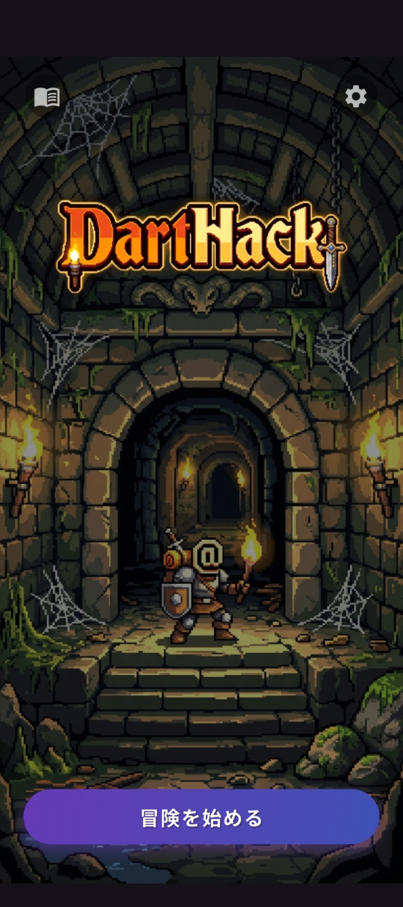
2 主人公の名前入力
主人公の名前を入力します。最大31バイトまで入力できます。(半角文字:1バイト、全角文字:3バイト)
- セーブデータが存在する場合は、その一覧が表示されます。セーブデータを選択すると名前が自動入力され、前回の続きから再開することができます。
- セーブせずにアプリを終了した場合、セーブデータは表示されませんが、前回と同じ名前を入力することでセーブデータをバックアップから復元して、前回の続きから再開できる場合があります。
プレイモードを選択します。
- 通常モード: 標準的な難易度でプレイします。
- 探索モード: 探索に集中できるモードです。倒されても復活できますが、スコアは記録されません。
- ウィザードモード: 探索モードに加えて、チートコマンドが使用できます。デバッグや実験に便利です。
名前とプレイモードを入力し、確定して「ゲーム開始」ボタンを押してゲームを開始します。
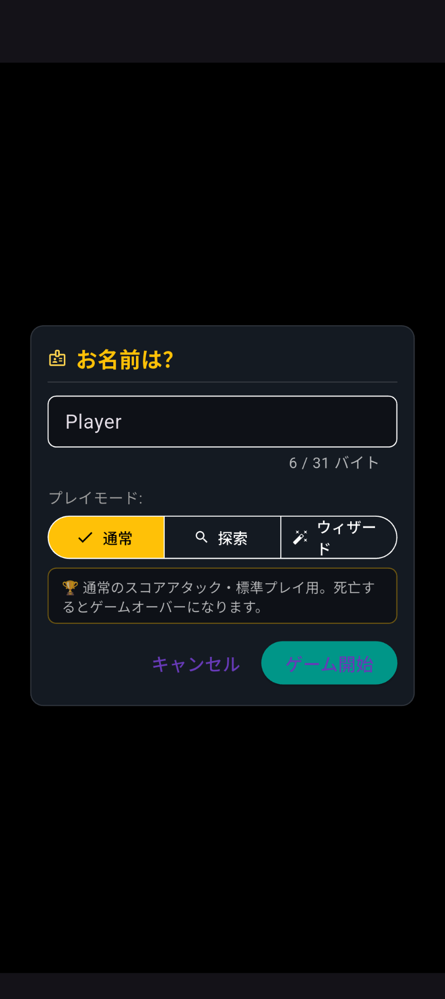
3 ゲーム画面
プレイ中の基本画面です。ダンジョンマップ、ステータス、アクションコマンドパネル、メッセージログが表示されます。状況に応じてフルキーボード入力や拡張コマンド一覧、メッセージ履歴を呼び出すことができます。
- ダンジョンマップをタップすると、その位置に自動的に移動します。
- 主人公をタップすると、その場で実行可能なアクションメニューを表示します。
- 主人公に隣接するマスに何かがある場合、それをタップすると、そのオブジェクトに対して実行可能なメニューを表示します。
- 画面最上部にある主人公の筋力や体力などのステータス情報をタップすると、より詳細なステータス情報を表示するダイアログが表示されます。
- その下にあるメッセージログをタップすると、過去のメッセージ履歴一覧を確認できます。
- 画面左下にある8方向の移動キー(yuhjklbn)をタップすると、主人公をその方向に移動させることができます。長押しすると何かを発見するまで自動移動します。
- 画面左下にある移動キーの真ん中にあるボタンを押すと、移動モードを切り替えることができます。長押しすると使用する移動モードを変更することができます。
- 画面右下にあるショートカットパネルのボタンを押すと、各種アクションコマンドを実行できます。長押しすると使用するコマンドを変更することができます。
- 画面最下部にあるコマンドパネルのボタンを押すと、各種コマンドを実行できます。左右にスワイプして画面外のボタンを表示することができます。長押しすると使用するコマンドの変更やボタンの追加・削除ができます。
- [kbd]ボタンを押すと、フルキーボード入力モードに切り替えることができます。[pad]ボタンを押すとパネル入力モードに戻すことができます。
- #ボタンを押すと、拡張コマンド一覧が表示され、選択するとそのコマンドを実行できます。
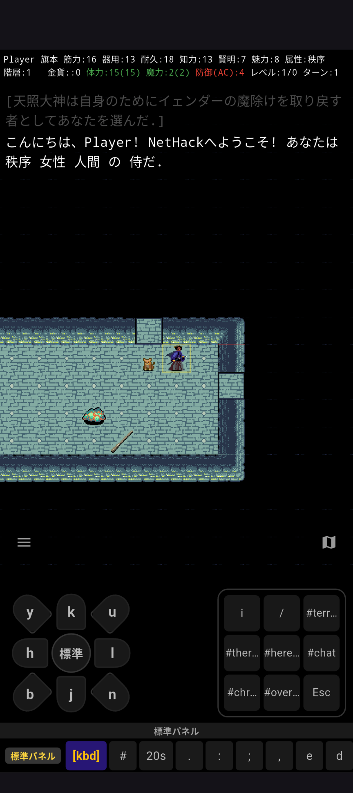
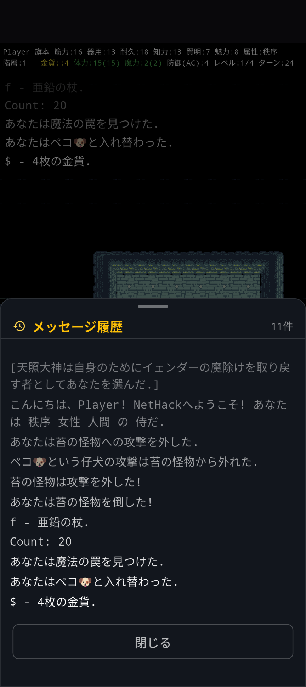
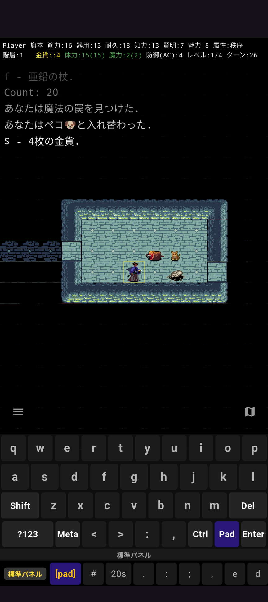
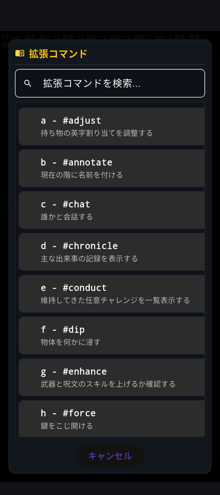
4 移動モード
移動キーの中央にあるボタンを長押しすると、移動キーをタップした際にどのように振舞うかを「移動モード」として指定できます。チェックを入れた移動モードは、移動パッドの中央ボタンを押すたびに切り替わり、8方向の移動ボタンの表記も変化します。
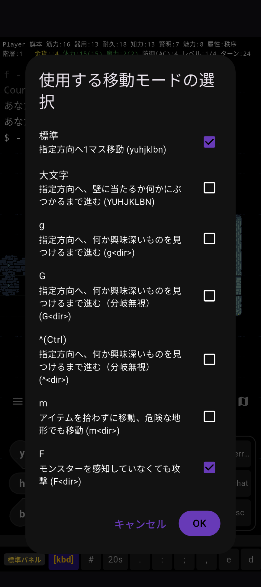
5 ショートカットボタンの変更
画面右下に配置されたショートカットボタンによく使うコマンドを自由に割り当てることができます。ボタンを長押しするとカスタマイズするメニューが表示されます。
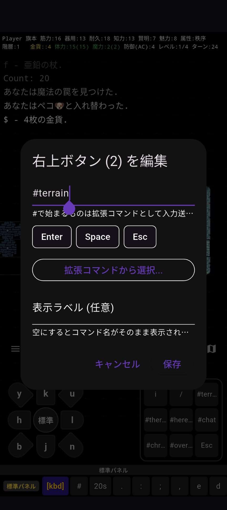
6 コマンドパネルボタンの変更
画面最下部に配置されたコマンドパネルのボタンを長押しすることで、登録コマンドや表記文字を変更することができます。ボタンの追加・削除もできます。
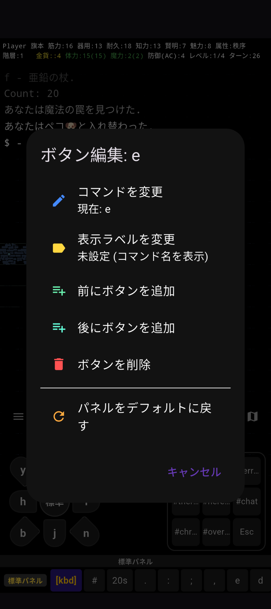
7 階層の全体マップ
全体マップボタンをタップすると、現在の階層全体のマップを確認できます。探索済みの部屋や通路の配置を一目で確認するのに役立ちます。
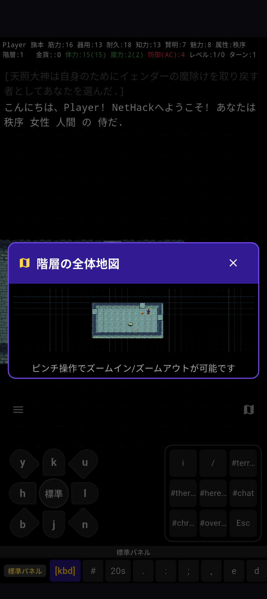
8 DartHackメニュー
メニューボタンをタップすると、DartHackの様々な機能を呼び出せるメニューを表示することができます。画面の端をスワイプすることでメニューを表示することもできます。
- セーブして終了 : セーブしてゲームを終了します。次回起動時はセーブデータを選択することで続きから再開することができます。Sキーを押した場合と同様です。
- セーブせずに終了(放棄) : セーブせずにゲームを終了し、今回の主人公による冒険をあきらめます。#quitコマンドを実行した場合と同様です。
- スコアボード : これまでに保存されたスコアの一覧を確認できます。
- ガイドブックを読む : NetHackのガイドブックを読むことができます。
- ヘルプを表示 : NetHackのヘルプを表示します。?コマンドを実行した場合と同様です。
- データベース検索 : NetHackのデータベース(百科事典)を検索できます。モンスターやアイテムに関して、シンボルを示す1文字(英語/記号)、または単語(ひらがな/漢字混じり/英語)を入力して検索できます。/→?コマンドを実行した場合と同様です。
- オプション設定 : ゲームのオプション設定を確認・変更できます。Oコマンドを実行した場合と同様です。
- ゲーム設定を開く : DartHackの設定画面を表示します。
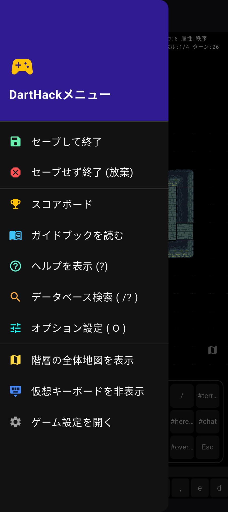
9 DartHack設定画面
ゲームの表示設定や操作オプションを調整するための設定画面です。様々な設定を試して自分に合ったプレイ環境を整えてください。
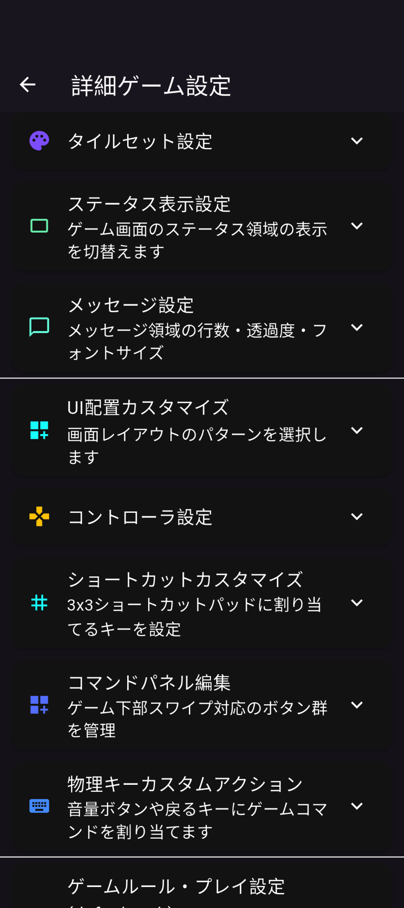
10 コマンドパネルの追加
DartHack設定画面の「コマンドパネル編集」では、用途に合わせて新しいコマンドパネルを追加・設定することができます。設定画面で追加・カスタマイズを行った後、ゲーム画面でコマンドパネルを縦にスワイプすることで、新しいコマンドパネルが表示されます。
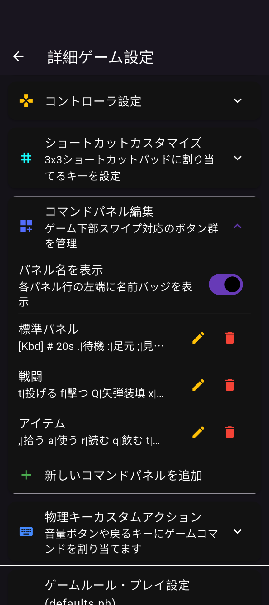
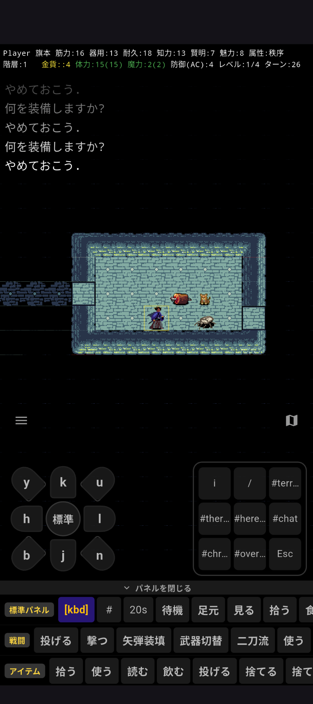
11 コントローラ配置パターン変更
DartHack設定画面の「UI配置カスタマイズ」では、画面上のコントローラーやキーボタンの配置パターンを変更できます。利き手やプレイ端末の画面サイズに合わせて最適なレイアウトを選択できます。
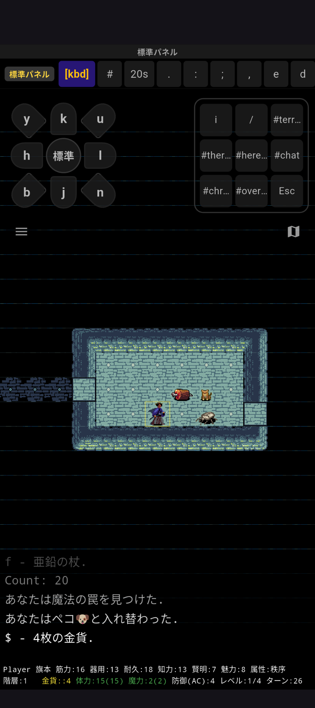
12 呼び名を決める時のメッセージ履歴確認
未識別のアイテムを使用した直後に「xxxxを何と呼びますか?」というダイアログが表示される場合があります。呼び名を決める際、どのような効果が現れたかを確認するために「履歴」ボタンを押すことで、直前のメッセージを確認することができます。
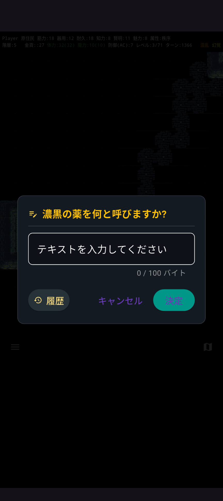
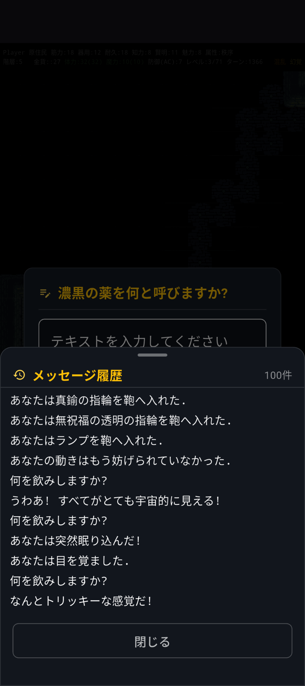